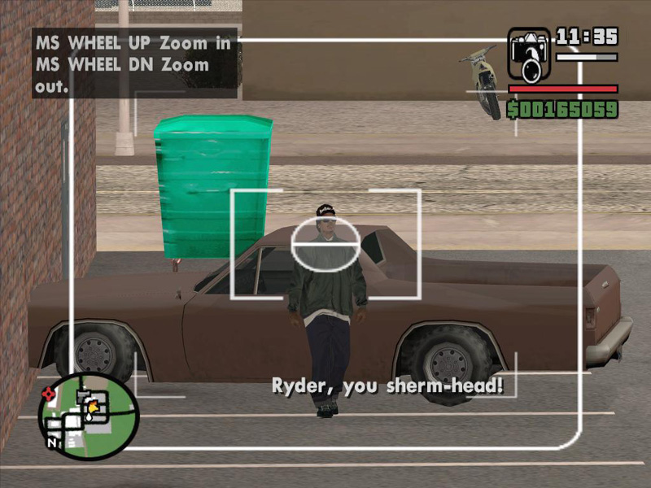

Книги
КнигиГлава 6. Непрекращающаяся борьба
Перевод для VSplanet.net
Кэролин со своим баром, Билли со своим Батчем сделали мою жизнь бурлящей. В школе я все же умудрился закончить восьмой класс, а затем и девятый. Но мое будущее, конечно же, выглядело не особо светлым. Оптимизма оставалось все меньше и меньше. Мне нужна была какая-то перемена. И физически и умственно.
Бонита, кстати, на год раньше меня закончила школу и получила работу. Черт возьми, она стала риэлтором, переехала в Даллас, где нашла себе молодого человека.
Я решил, что надо ненадолго съехать от Кэролин и отправился к тетушке Валлии Хафф, которая жила в Южном Парке, неподалеку от нашего старого дома. Это решение казалось мне отличным выходом, как разнообразить свою жизнь. Тетушка Хафф была сестрой моего бывшего отчима Роберта Хилла (да-да, того самого телевизионного вора).
Валлия была замужем за отличным парнем по имени Айзек Хафф. Он был отцом моего хорошего приятеля Франа, что сделало переезд просто отличным. Я всегда воспринимал Хаффов и как свою семью тоже. Мне казалось, что я возвращаюсь домой. Тогда это было для меня идеальной жизнью. Это была очень дружная семья, они жили в хорошем доме, у них была отличная машина, но, что более важно, они приняли меня как часть семьи! Они приютили меня, кормили, поддерживали меня в учебе.
Несмотря на то, что Хаффы жили в Южном Парке, в районе, где была школа Джесси Эйч.Джонса, в которую ходили Лэш и Бонита, я хотел попасть в другую — в школу Джека Ейтса, расположенную в соседнем районе. Там была отличная баскетбольная и футбольная команды. Ну и естественно, там был мой любимый музыкальный ансамбль! В общем, я собрал все нужные документы и сделал то, что сделал бы любой предприимчивый 16-летний малец на моем месте: соврал относительно адреса проживания. Тогда можно было обмануть систему без особого труда. Попав в школу Ейтса, я пулей метнулся записываться в школьный ансамбль. И тут меня словно по голове ударили: тут все делалось иначе, и право попасть в школьный ансамбль нужно было зарабатывать пару лет.
Пару лет. Черт. Терпение никогда не было моей сильной чертой. Я не хотел ждать, поэтому я плюнул на эту идею и решил провести ближайшие годы как и прежние: бесцельно болтаясь по округе, изредка посещая занятия.
Дома у Хаффов все тоже было не так безоблачно. Поначалу меня очень привлекали новые перспективы, но в конце концов, тот факт, что я все же не был членом их семьи, сыграл свою роль. Я всегда был словно бы одной ногой на улице. Я не мог полностью признать Хаффов своей семьей. По ночам я не мог заснуть, лежал в депрессии и смотрел в потолок. Это не мой отец. Это не моя семья. Это не моя жизнь. Хаффы были обычной респектабельной семьей, которой были чужды проблемы и неприятности, к которым я привык, живя у своих сестер. Они обедали вместе, говорили о своих интересах. Это было мне чуждо. Мне всегда нравились межличностные отношения, которые отображались в разных сериалах, например, в «The Brady». Там, где сходились разные люди, разные характеры. Но мне было ужасно некомфортно. Та грозовая туча, которая нависла над нами с Бонитой, теперь угрожала мне одному. Я не мог принять ничего из того, что было в семье Хаффов. Помимо этого не исчезало ощущение, что все это может исчезнуть в любой момент. Я молился, чтобы все это осталось как можно дольше, но страх возможного отчуждения всегда был со мной.
И все чаще в голове всплывали воспоминания о мире уличных приключений, которые порой казались мне все более привлекательными. Хаффы однозначно относились к тому, что я вспоминал. Они были категорически против. Возможно, это было и к лучшему, но мы с ними были продуктами совершенно разных окружений. Мы с Франом были полными противоположностями. Он готовился к поступлению в колледж, а я мечтал о быстром заработке. Пока Фран готовился к урокам химии или экзамену по английскому, ему было менее всего интересно слушать мои рассуждения.
Несмотря на это, несмотря на то, что я постоянно разрывался между двумя мирами, я старался оставаться на правильной дорожке. В том плане, что да, я иногда думал о том, чтобы сутенерить парочку девчонок, поднимать деньги на наркотиках, но у меня не было никакого четкого плана.
Но на дворе был 1981 год! Мне было 16. И, наверное, я логично пришел к своему следующему увлечению: уличные танцы, так называемые «поп-локинг».
В публикации на VSplanet здесь было видео.
Долгое время я был фанатом сериала «Поезд Соула» с Доном Корнелиусом. И меня всегда завораживали их танцевальные движения. Музыка текла ритмичным потоком, которые буквально заставлял подниматься и танцевать!
За несколько лет до того, в середине 70х я как-то видел группу The Lockers. Они были великолепны и сразу покорили меня. Их было семеро, они носили одинаковые костюмы и постонно двигались, прыгали, крутились, носились. Все это принесло им большой успех. Но двое из них достигли еще большего успеха! Фред Берри стал памятным персонажем сериала «What’s Happening!!», а Тони Бэзил в 1982м году исполнила поп-хит номер 1 «Hey Mickey».
В публикации на VSplanet здесь было видео.
Мне это было настолько интересно, что я был готов создать свою собственную группу! Я собрал еще трех ребят, мы назвались The Remote Controls и начали танцевать! Мы выступали на различных конкурсах, на школьных вечерах. Я ставил танцы на музыку таких групп как Kraftwerk, Soul Sonic Force, Herbie Hancock. Мы носили серебряные костюмы из латекса и винила. На самом деле это были переделанные костюмы для бега, в которых повышается потоотделение для усиленной сгонки веса. На шоу талантов мы выступали с выключенным светом и различными прожекторами и лазерами — для усиления эффекта. В общем, наши танцы пользовались большим успехом. Те несколько лет, что я играл на ударных в ансамбле моей предыдущей школы, очень сильно мне помогло. Я научился чувствовать ритм, понимать стиль. Это все легко переросло в хитроумные движения поп-локинга, которые я проделывал на танцплощадках. Благодаря танцам я мог выражать себя, и разочарование тем, что меня не взяли в ансамбль, ушло. Я был уверен, популярен и пользовался вниманием девчонок. Одна и них заинтересовала и меня.
Ее звали Анджела. Она была миленькой светленькой негритянкой, училась в восьмом классе моей прежней школы Хартмана. Очень скоро мы начали обмениваться записками, затем проводить вместе время, хотя я бы не сказал, что мы встречаемся.
В конце года в школе Хартмана был танцевальный вечер. Я настроился посетить его даже несмотря на то, что уже давно не ходил в эту школу. Тогда вообще ходили на дискотеки вне зависимости, кто и где учился.
На том вечере я был звездой, я увиделся со старыми друзьями, включая, конечно, и Анджелу. Внезапно я услышал знакомый голос:
— Эй, козёл, ты что тут забыл?
Я узнал в этом голосе Райли Смита. Мы не виделись больше двух лет — с того дня, когда меня отстранили от занятий в конце моего первого восьмого класса. Не успел я повернуться, как его дружки меня окружили. Мы начали толкаться с Райли, постепенно мы выбрались на улицу. Тогда было тепло и часть танцпола была под открытым небом.
Когда мы оказались на парковке, ситуация обострилась. Я врезал Райли в челюсть, разбив ему лицо. Тогда на меня набросилась вся ватага. Меня выбросили на улицу, я тогда больно приземлился на локоть и задницу. Тут подоспели охранники, которые попытались нас разнять. Нас растащили, я отправился домой. Пройдя несколько кварталов, я огляделся: моя рубашка была порвана, галстук испачкан, локти ободраны.
— Вот ублюдки, — пробормотал я и пошел домой.
Да, я снова нарвался на этих придурков. Эта мысль возвращалась все снова и снова. Правда надо признать, что больше я Смитов никогда не видел.
Мы с Анджелой то встречались, то расходились. Мы несколько раз переспали, но тогда было сложно добиться уединения хоть где-нибудь.
Как-то раз после школы Хаффов не было дома и мы остались наедине. Мне пришла в голову мысль сделать это на огромно кровати тетушки Валлии. Получилось чудесно. Но когда мы зашли на четвертый или пятый круг, открылась дверь и появилась тетушка. Она была в шоке, но вышла, не сказав ни слова. Этого не было необходимо.
Анджела вскочила, оделась и убежала в ванную комнату. Я быстренько оделся и побежал просить прощения. Но к моему удивлению, она не особо сильно возмущалась. Она просто предупредиа, чтобы в будущем я не занимался этими вещами на ее кровати. Это было логичной просьбой, поэтому я с радостью согласился, после чего мы даже посмеялись. Да, тетушка Валлия была просто чудесной.
К сожалению, вскоре после этого наши отношения с Анджелой прекратились насовсем. Через пару недель ее бабушка позвонила и попросила приехать. Я почувствовал беду, но понадеялся на лучшее. Так что я поднялся к Франу и попросил подвезти меня. Он довез меня, подбадривая меня различными шутками, но я был не в духе. Я смотрел, как в окнах мимо проплывают деревья, а сквозь листья проглядывает солнце. Я сотни раз ездил этой дорогой, но на этот раз все было иначе. Мы потихоньку доехали до Белфорда и переехали через железнодорожный переезд.
Когда мы добрались до места назначения, я ощущал себя смертником, которому предстоит отправиться в комнату с электрическим стулом.
Фран пожал мне руку и сказал, что я все равно был круче него. Он посмеялся, а я посмотрел в ответ взглядом смерти, хлопнул дверью и пошел к дому.
Дверь открылась, и бабушка Анджелы тут же обрушила на меня удар топором:
— Букер, она беременна.
Эта дама невысокого роста сверлила меня взглядом.
Это было не совсем то, чего я ожидал и боялся, но это тоже было неприятно.
Кстати, самой Анджелы дома не было. Я знал, что ей уже устроили взбучку, так что настало мое время.
— Итак, — спросила бабушка, — что ты намерен делать? Ты должен поступить правильно и жениться на Анджеле Вы должны воспитать этого ребенка правильно.
Ух ты. Бабуля била прямой наводкой. Брак? Ребенок? Да ну ни за что. Не я и не сейчас. Я пробормотал в ответ, что у меня даже не было работы.
— Так найди ее.
Да, бабушка была не промах. Я взмок от напряжения. Я не собирался жениться на Анджеле. Да что там, я даже не был уверен, что ребенок был мой! У нас были дружеские свободные отношения, мы встречались и с другими. И когда меня зажали в угол, я подумал, что это не было только лишь моей ответственность. Кроме того я очевидно был к этому не готов. Я рассчитывал на еще много лет свободы и ничего-не-деланья перед тем, как стать отцом. Все эти мысли проносились в моей голове. Я вспомнил также ранние смерти моих родителей, неблагонадежную жизнь моих братьев и сестёр. Какой из меня получился бы отец?
Я пробормотал, что мне пора, и в прямом смысле слова сбежал. Я перестал разговаривать с Анджелой, не звонил ей. Если она звонила, я просто не отвечал. Мне хотелось, чтоб она исчезла, я старался по максимуму дистанцироваться от нее.
Когда наступил новый учебный год, я совсем забросил в школу. Я иногда приходил, но лишь для того, чтобы пообщаться с друзьями. Я смирился с фактом, что Букер Т. Хаффмен не создан для ученых свершений. Так зачем было тратить время?
Я сделал выбор и ушел из школы. Я почувствовал себя свободным как никогда раньше. Ушло чувство принадлежности к непонятной системе. Мне казалось, что я сбросил огромный вес, что давил мне на плечи, и это было чудесно.
Даже притом, что я был единственным из моей семьи, кто не закончил школу, меня это не волновало. Я чувствовал себя взрослым человеком, который занимался своими делами. Я держал свою судьбу в своих же руках. Передо мной открывались бесконечные возможности.
Тем не менее, я все еще не был уверен в том, чем мне нужно заниматься. Мне было 17, я был разбит и не видел перспектив. Я обрел свободу, но из-за нее лишь пришел в еще большее уныние. В первый раз в жизни я задумался о том, чтобы найти нормальную работу. Через пару недель я начал работать в Магазине Фиеста-Март в Южном Парке. И с первой же секунды я свою работу возненавидел.
Это был совершенно обычный универсам — как Уолмарт или Таргет. Там продавали одежду, обувь, музыкальные и видео-кассеты, был и продуктовый отдел. И естественно, очень скоро я начал выдумывать разные штуки. Я был мерчендайзером, упаковщиком, ну и естественно, подворовывал. Я думал. что мне сойдет с рук что угодно, так что в один день я ушел омой с парочкой новеньких ковбойских сапогов. В другой день я решил вынести кроссовки. Потом под футболкой я пронес стейк. Через несколько недель работы в Фиеста-Марте моя комната в доме тетушки Валлии стала выглядеть как нечто среднее между ковбойским магазином и секонд-хендом. Холодильник в доме стал напоминать мясной склад.
Было круто.
Самым крутым было, что мои кражи поддерживали мой уличный авторитет, даже притом, что я работал на такой непрестижной работе. Каждый день, уходя с работы, я словно бы показывал средний палец и охране, и всему магазину, и всей сети, которая им управляла. Это было хороше время для охоты, и я не упускал возможностей.
Как-то раз я не хотел выходить на работу, хотелось просто ничего не делать и покурить. Так что я позвонил управляющему и измененным голосом представился Билли Джин, своей же сестрой. Я сказал, что Букер Т болен и не сможет прийти. Управляющий сказал, что когда Букеру станет лучше, он может прийти в магазин и забрать свою последнюю зарплату. Меня уволили.
Я настолько удивился, что чуть не заговорил своим обычным голосом. Тем не менее, я что-то пробормотал в ответ, а затем управляющий повесил трубку.
Какого черта? Меня только что вышвырнули за то, что я изобразил женский голос? Я был опозорен. В ужасном настроении я съездил в Фиеста Март и забрал чек. Сразу после этого я уехал оттуда, попрощавшись с этой карьерой в розничных продажах насовсем. Я снова стал жить за счет тетушки Валлии. Но чем дальше, тем чаще я думал о том, чтобы начать зарабатывать самостоятельно.
Я бросил школу, из-за меня забеременела Анджела, меня уволили с работы. Все это привело меня к сложному выбору. Я начал подумать о возвращении в мир уличный мир моих сестер. В конце концов, я решил позвонить Кэролин.
Она к тому моменту переехала на север города, и была не против, чтобы я переехал к ней.
Во время ужина с Валлией, Айзеком и Франом я объяснил им свое решение. Тетушку эта идея устроила. Думаю, мой непредсказуемый образ жизни, неприятности с Анджелой, мое очевидное увлечение наркотиками, увольнение из Фиесты — ей все это надоело. Кроме того они с Айзеком опасались, что Фран нахватается от меня ненужных привычек. Я был благодарен Хаффам и никогда не забуду их любовь и заботу, но тогда настало время распрощаться.
Что ж, мне почти исполнилось 18, я уже лучше разбирался в том, кто и с какой целью посещал Кэролин. У нее было много «друзей с преимуществами», благодаря чему она обеспечивала себя. Но как-то раз я сдурил и решил предъявить свои претензии:
— Почему к нам постоянно приходят эти мужчины? Они занимают много места, времени и ужасно надоедливы.
Это было большой ошибкой.
Кэролин сорвалась и наорала на меня. Она дала понять, что это ни разу не мое дело. Мы поругались, причем достаточно серьезно. В конце концов, она сказала, чтоб я собрал вещи и выматывался из ее дома к чертовой бабушке.
Я был уничтожен. Снова. Я собрал вещи, вышел и присел на обочине, пытаясь собрать мысли в кучу. Меня снова все бросили. Я пытался отогнать панику и разобраться в своих перспективах. Мне уже не очень хотелось возвращаться к безумному мирку Билли. Я мог бы попытаться упросить тетушку Валлию принять меня обратно. Бонита уехала в Даллас. Единственным выбором, который у меня оставался, и который я еще не провалил, был Лэш.
В последние четыре года мы не очень хорошо общались. С того момента, как он бросил нас с Бонитой в заброшенном старом доме, мы практически не виделись. Вместе мы разве что сходили пару раз на рестлинг-шоу, но на этом все.
Я был в отчаянии, но тем не менее, я позвонил Лэшу и все рассказал.
К моему удивлению, Лэш сказал, что я могу пожить у него некоторое время, а там видно будет.
Это был очередной темный момент моей жизни, и его приглашение наполнило мое сердце такой важной для меня надеждой.
Вообще в последние пару лет Лэш неплохо устроился. Он переехал на юго-восток города, где работал дезинсектором. На работу он ездил на фургоне, который выглядел как большая мышь. К нему даже были приделаны огромные уши, а из-под бампера торчал небольшой импровизированный хвост. Когда я в первый раз его увидел, я чуть не рассмеялся. Я сдержал смех, потому что, в конце концов, у него была работа, он сам себя обеспечивал! Чего я о себе сказать не мог.
Лэш проживал в районе, который назывался Уиллоу Крик. Мое время у него было очень интересным. В конце концов, мы были братьями, хоть и были совершенно непохожи друг на друга. Мы не сходились в мнениях практически ни о чем. Единственное, что нас сближало, — это бокс! Мы всегда с увлечением смотрели боксерские поединки по телевизору. В остальном, наши взгляды редко совпадали.
Главное, в чем изменился Лэш за то время, пока мы не виделись, были его размеры. Он стал просто гигантом. Огромная грудная клетка, мощные руки. Он был под 2 метра ростом! Возможно, по этой причине, возможно, потому, что у него был симпатичный Шевроле Эль Камино, но у Лэша всегда было много подружек! И естественно, я захотел стать таким, как он.

Буду честен, когда я переводил эту биографию, я постоянно визуализировал некоторые эпизоды из его жизни сценами из GTA San Andreas. И там, и там была история неблагополучного черного парня из неблагополучного района, у которого были несколько братьев и сестер, которого растила мать. Но Chevy El Camino — это прообраз для машины Picador, которой, правда, владел не брат героя, а сосед Райдер.
Кстати, Лэш согласился помочь мне и поработать над своей физической формой. Он следил за тем, чтобы я делал отжимания и работал над прессом. После каждых занятий у меня болело все тело, но через несколько недель я втянулся и почувствовал, как изменился мой внешний вид. Мне понравилось. Когда я сказал об этом Лэшу, он отвел меня в спортзал, где все вышло на другой уровень.
Также Лэш серьезно относился к тому, чтобы я нашел работу. Это было справедливо, поэтому я приступил к поискам. Не успел я опомниться, как я уже работал в Wendy’s, где готовил бургеры. Это было недалеко от дома, так что я ходил туда пешком. Да, меня смущала необходимость носить красную рубашку и черную кепку, но, скажу вам по-честному, работа в фаст-фудовой индустрии была неплохой.
И знаете, я даже немного воспрял духом.
Оглавление книги